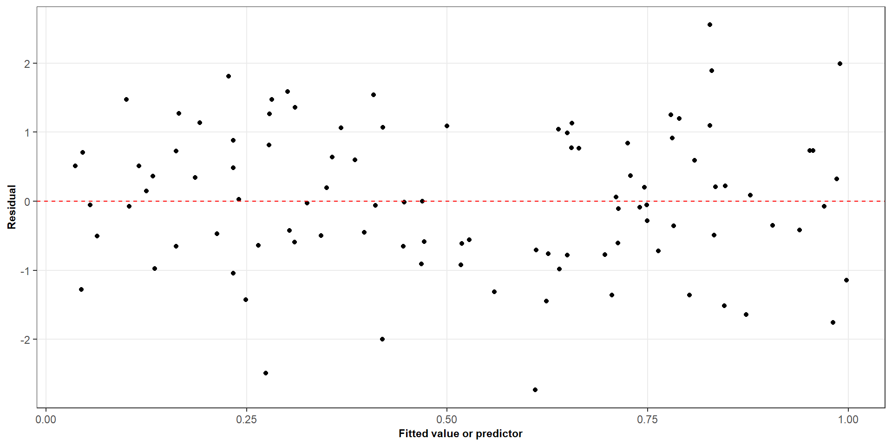
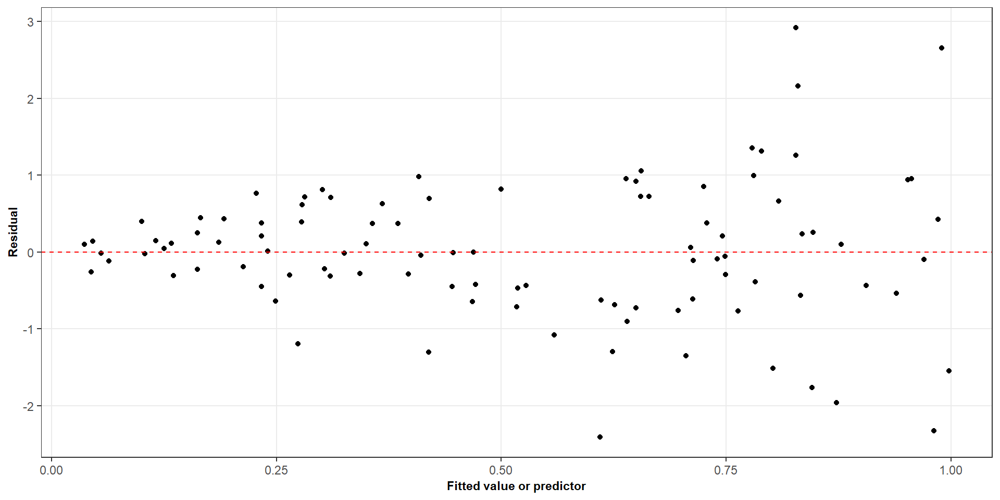
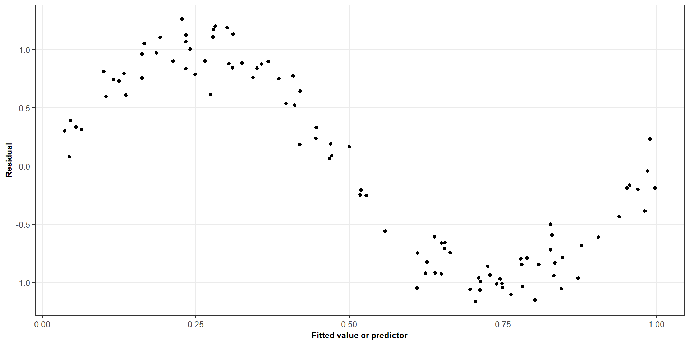
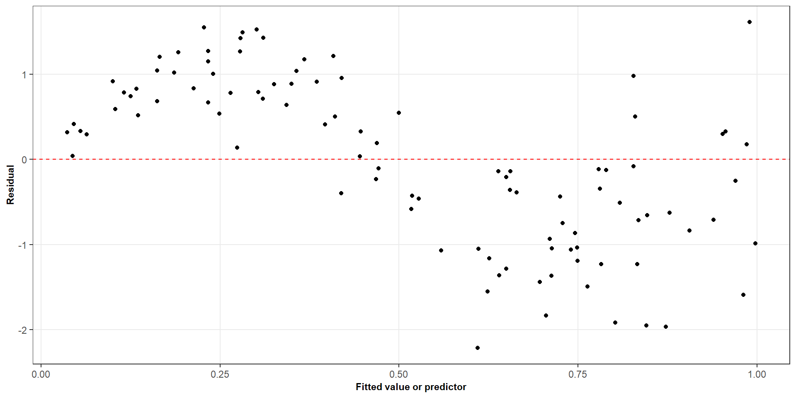
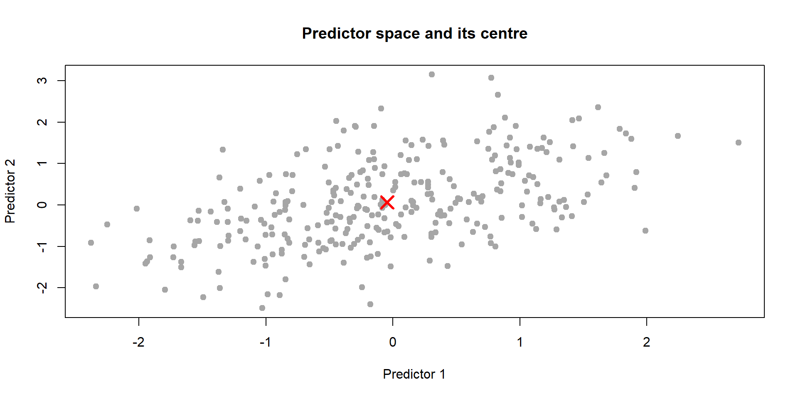

ST303 - Linear Models
Recall the multiple linear regression model
\[ \mathbf{Y} = \mathbf{X}\boldsymbol{\beta} + \boldsymbol{\varepsilon} \]
The usual model assumptions concern the unobserved errors:
\[ E(\boldsymbol{\varepsilon})=\mathbf{0}, \qquad \operatorname{Var}(\boldsymbol{\varepsilon})=\sigma^2 \; \mathbf{I}_n \qquad \boldsymbol{\varepsilon}\sim N_n(\mathbf{0},\sigma^2\mathbf{I}_n) \]
The assumptions describe the behaviour of the errors around the regression mean function.
The assumptions are not simply a checklist
They justify the usual properties of least squares estimates and the standard inferential procedures.
For example:
A diagnostic analysis helps us decide whether the fitted model is a reasonable description of the data and whether the usual inferential results can be trusted.
We cannot observe the errors \(\varepsilon_i\), because the true regression function is unknown.
Instead, we calculate residuals: \(e_i = y_i - \hat{y}_i\)
\[ \mathbf{e} = \mathbf{Y}-\widehat{\mathbf{Y}} = \mathbf{Y} - \mathbf{H} \mathbf{Y}, \]
where \(\mathbf{H}\) is the hat matrix
\[ \mathbf{H}=\mathbf{X}(\mathbf{X}^{T}\mathbf{X})^{-1}\mathbf{X}^{T} \]
Residuals are our observable evidence about whether the model assumptions are plausible.
The error is the unobserved deviation from the true regression mean:
\[ \varepsilon_i = y_i - E(Y_i \mid \mathbf{x}_i) \]
The residual is the deviation from the estimated regression mean:
\[ e_i=y_i-\widehat{y}_i \]
The distinction matters because the fitted values are estimated from the same data.
Each observation contributes to the fitted model, and this affects the size and dependence of the residuals.
The main plots used to assess a regression model are
Residuals versus fitted values: looks for non-linearity and changing variance
Residuals versus each predictor: looks for patterns not captured by the model
Normal Q–Q plot: assesses whether the residual distribution is broadly compatible with normality
A useful reference pattern is a random horizontal band around zero.
There should be no obvious curve, systematic trend, funnel shape, or isolated pattern




In simple linear regression, the relationship between a residual pattern and a model problem can often be relatively clear.
In multiple regression, interpretation is harder because:
Use the full set of diagnostic plots rather than relying on one plot
Residuals have different variances:
\[ \operatorname{Var}(e_i)=(1-h_{ii})\sigma^2 \]
A residual from a high-leverage observation can therefore have a smaller variance than a residual from a typical observation.
To put residuals on a more comparable scale, define
\[ r_i = \frac{e_i}{\widehat{\sigma}\sqrt{1-h_{ii}}}, \]
where \(\widehat{\sigma}=\sqrt{\operatorname{SSE}/(n-p)}\), and \(p\) is the number of fitted regression parameters, including the intercept.
These are often called standardised residuals
Standardised residuals are approximately on a common scale:
\[ \mathbb{E}(r_i)\approx 0 \qquad \operatorname{Var}(r_i)\approx 1 \]
They are useful for identifying observations whose responses are poorly predicted by the model.
Rules of thumb:
These are screening guidelines, not automatic rules for deleting observations.
Residuals are still dependent, and looking at many observations increases the chance of seeing an apparently unusual value.
Residuals describe how far an observed response is from its fitted value
Leverage describes how unusual an observation’s predictor values are
The leverage of observation \(i\) is the \(i^{\text{th}}\) diagonal element of the hat matrix
\[ h_{ii} = \mathbf{x}_i^T (\mathbf{X}^T\mathbf{X})^{-1}\mathbf{x}_i \]
Leverage depends on the predictor values, not on the observed response.
For simple linear regression with an intercept,
\[ h_{ii} = \frac{1}{n}+ \frac{(x_i-\bar{x})^2}{S_{xx}}, \qquad S_{xx}=\sum_{i=1}^{n}(x_i-\bar{x})^2. \]
An observation has high leverage when its predictor value is far from the predictor mean.
In multiple regression, the same idea applies in a multidimensional predictor space:
Leverage is related to the observation’s distance from the centre of the predictor data, accounting for the scale and correlation of the predictors.

\[ 0\leq h_{ii}\leq 1 \]
\[ \frac{1}{n}\leq h_{ii}\leq 1 \]
A common screening guideline is to investigate observations with
\[ h_{ii}>\frac{2p}{n} \]
This is a rule of thumb rather than a formal test.
A high-leverage observation is unusual in the predictor space.
It has the potential to influence the fitted regression model because it can pull the fitted relationship towards itself.
However:
We therefore need to distinguish potential influence from actual influence.
Consider two questions:
An observation can have:
The third situation is particularly likely to produce an influential observation.
One way to measure influence is to compare the fitted values from:
Let \(\widehat{y}_j\) be the fitted value using all observations and \(\widehat{y}_{j(i)}\) the fitted value when observation \(i\) is omitted.
Cook’s distance is
\[ D_i = \frac{1}{p\widehat{\sigma}^{2}} \sum_{j=1}^{n} \left(\widehat{y}_{j}-\widehat{y}_{j(i)}\right)^2 \]
It measures the overall change in fitted values when observation \(i\) is removed.
A large value indicates that the observation has a substantial effect on the fitted model.
It may seem that we need to fit the model \(n\) additional times, omitting one observation at a time.
Fortunately, there is a shortcut:
\[ D_i = \frac{r_i^2h_{ii}}{p(1-h_{ii})} \]
where:
Thus, Cook’s distance can be calculated from a single fitted model
Cook’s distance is best used to rank observations and identify cases for further investigation.
A commonly used screening guideline is
\[ D_i > \frac{4}{n-p} \]
This is not a universal cut-off
The size of Cook’s distance should be considered alongside:
Other useful quantities include:
An externally standardised residual uses an estimate of \(\sigma\) calculated with observation \(i\) omitted:
\[ t_i = \frac{e_i}{\widehat{\sigma}_{(i)}\sqrt{1-h_{ii}}} \]
These diagnostics provide complementary information.
No single statistic gives a complete account of an unusual observation.
Workflow